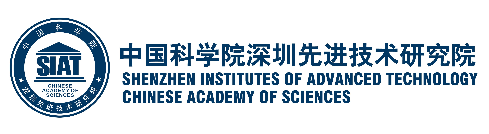
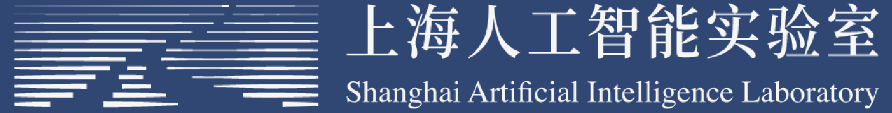

Organizers
Main Organizers
Yali Wang
Shenzhen Institutes of Advanced Technology, Chinese Academy of Sciences, China
yl.wang@siat.ac.cn
Yi Dai
Shenzhen Bominwell Robotics Co.,Ltd, China
daiyi@bominwell.com
Fei Xie
Shenzhen Bominwell Robotics Co.,Ltd, China
xief@bominwell.com
Wei Yao
Shenzhen Longhua Drainage Co., Ltd, China
yaowei34696@gmail.com
Yu Qiao
Shenzhen Institutes of Advanced Technology, Chinese Academy of Sciences, China
yu.qiao@siat.ac.cn
Task Organizers
Task 1: Xuan Zhang, Ying Li, Yabing Jiang, Lixia Qiu
Task 2: Yi Liu, Ying Li, Guixin Liang, Haiping Tang
Supporting organizations
 